폐기물처리산업기사 (2019-03-03 기출문제)
1과목: 폐기물개론
1. 다음 중 수거 분뇨의 성질에 영향을 주는 요소와 거리가 먼 것은?
- 배출지역의 기후
- 분뇨 저장기간
- 저장탱크의 구조와 크기
- 종말처리방식
(정답률: 67%)

2. 적환장의 일반적인 설치 필요조건으로 가장 거리가 먼 것은?
- 작은 용량의 수집차량을 사용할 때
- 슬러지 수송이나 공기수송 방식을 사용할 때
- 불법 투기와 다량의 어질러진 쓰레기들이 발생할 때
- 고밀도 거주지역이 존재할 때
(정답률: 91%)
3. 유기성 폐기물의 퇴비화과정에 대한 설명으로 가장 거리가 먼 것은?
- 암모니아 냄새가 유발될 경우 건조된 낙엽과 같은 탄소원을 첨가해야 한다.
- 발효초기 원료의 온도가 40~60℃까지 증가하면 효모나 질산화균이 우점한다.
- C/N비가 너무 낮으면 질소가 암모니아로 변하여 pH를 증가시킨다.
- 염분함량이 높은 원료를 퇴비화하여 토양에 시비하면 토양경화의 원인이 된다.
(정답률: 56%)
4. 압축기에 관한 설명으로 가장 거리가 먼 것은?
- 회전식 압축기는 회전력을 이용하여 압축한다.
- 고정식 압축기는 압축 방법에 따라 수평식과 수직식이 있다.
- 백(bag) 압축기는 연속식과 회분식으로 구분할 수 있다.
- 압축결속기는 압축이 끝난 폐기물을 끈으로 묶는 장치이다.
(정답률: 59%)
5. 폐기물 파쇄 시 작용하는 힘과 가장 거리가 먼 것은?
- 충격력
- 압축력
- 인장력
- 전단력
(정답률: 82%)
6. 유해물질, 배출원, 그에 따른 인체의 영향으로 옳지 않은 것은?
- 수은 - 온도계제조시설 - 미나마타병
- 카드뮴 - 도금시설 - 이따이이따이병
- 납 - 농약제조시설 - 헤모글로빈 생성 촉진
- PCB - 트렌스유제조시설 - 카네미유증
(정답률: 86%)
7. 우리나라 폐기물 중 가장 큰 구성비율을 차지하는 것은?
- 생활폐기물
- 사업장 폐기물 중 처리시설 폐기물
- 사업장 폐기물 중 건설폐기물
- 사업장 폐기물 중 지정폐기물
(정답률: 82%)
8. 삼성분의 조성비를 이용하여 발열량을 분석할 때 이용되는 추정식에 대한 설명으로 맞는 것은?
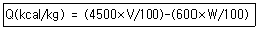
- 600은 물의 포화수증기압을 의미한다.
- V는 쓰레기 가연분의 조성비(%)이다.
- W는 회분의 조성비(%)이다.
- 이 식은 고위발열량을 의미한다.
(정답률: 69%)
9. 습량기준 회분율(A, %)을 구하는 식으로 맞는 것은?
- 건조쓰레기회분(%)×
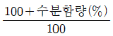
- 수분함량(%)×
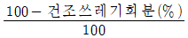
- 건조쓰레기회분(%)×
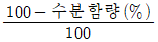
- 수분함량(%)×
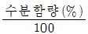
(정답률: 71%)
10. 매립 시 파쇄를 통해 얻는 이점을 설명한 것으로 가장 거리가 먼 것은?
- 압축장비가 없어도 고밀도의 매립이 가능하다.
- 곱게 파쇄하면 매립 시 복토가 필요 없거나 복토요구량이 절감된다.
- 폐기물과 잘 섞여서 혐기성 조건을 유지하므로 메탄 등의 재회수가 용이하다.
- 폐기물 입자의 표면적이 증가되어 미생물작용이 촉진된다.
(정답률: 62%)
11. 폐기물의 80%를 3cm 보다 작게 파쇄하려 할 때 Rosin-Rammler 입자크기 분포모델을 이용한 특성입자의 크기(cm)는? (단, n = 1)
- 1.36
- 1.86
- 2.36
- 2.86
(정답률: 62%)
12. 쓰레기의 발생량 조사방법인 직접계근법에 관한 내용으로 가장 거리가 먼 것은?
- 입구에서 쓰레기가 적재되어 있는 차량과 출구에서 쓰레기를 적하한 공차량을 각각 계근하여 그 차이로 쓰레기량을 산출한다.
- 적재차량 계수분석에 비하여 작업량이 적고 간단하다.
- 비교적 정확한 쓰레기 발생량을 파악할 수 있다.
- 일정기간동안 특정지역의 쓰레기를 수거한 운반차량을 중간적하장이나 중계처리장에서 직접 계근하는 방법이다.
(정답률: 93%)
13. 채취한 쓰레기 시료 분석 시 가장 먼저 진행하여야 하는 분석절차는?
- 절단 및 분쇄
- 건조
- 분류(가연성, 불연성)
- 밀도측정
(정답률: 90%)
14. 수분이 60%, 수소가 10%인 폐기물의 고위발열량이 4500kcal/kg이라면 저위발열량(kcal/kg)은?
- 약 4010
- 약 3930
- 약 3820
- 약 3600
(정답률: 79%)
15. 종량제에 대한 설명으로 가장 거리가 먼 것은?
- 처리비용을 배출자가 부담하는 원인자 부담원칙을 확대한 제도이다.
- 시장, 군수, 구청장이 수거체제의 관리책임을 가진다.
- 가전제품, 가구 등 대형폐기물을 우선으로 수거한다.
- 수수료 부과기준을 현실화하여 폐기물 감량화를 도모하고, 처리재원을 확보한다.
(정답률: 88%)
16. 선별방법 중 주로 물렁거리는 가벼운 물질에서부터 딱딱한 물질을 선별하는 데 사용되는 것은?
- Flotation
- Heavy media separator
- Stoners
- Secators
(정답률: 82%)
17. 대상가구 3000세대, 세대당 평균인구수 2.5인, 쓰레기 발생량 1.⑤kg/인ㆍ일, 1주일에 2회 수거하는 지역에서 한 번에 수거되는 쓰레기 양(톤)은?
- 약 25
- 약 28
- 약 30
- 약 32
(정답률: 71%)
18. 함수율이 80%이며 건조고형물의 비중이 1.42인 슬러지의 비중은? (단, 물의 비중 = 1.0)
- 1.021
- 1.063
- 1.127
- 1.174
(정답률: 66%)
19. 폐기물발생량 측정방법이 아닌 것은?
- 적재차량계수분석법
- 직접계근법
- 물질수지법
- 물리적조성법
(정답률: 83%)
20. 폐기물 재활용 촉진을 위한 정책 중 국내에서 가장 먼저 시행된 제도는?
- 주류공병 보증금제도
- 합성수지제품 부과금제도
- 농약빈병 시상금제도
- 고철 보조금제도
(정답률: 72%)
2과목: 폐기물처리기술
21. 퇴비화 반응의 분해정도를 판단하기 위해 제안된 방법으로 가장 거리가 먼 것은?
- 온도 감소
- 공기공급량 증가
- 퇴비의 발열능력 감소
- 산화ㆍ환원전위의 증가
(정답률: 45%)
22. 합성차수막 중 PVC에 관한 설명으로 틀린 것은?
- 작업이 용이하다.
- 접합이 용이하고 가격이 저렴하다.
- 자외선, 오존, 기후에 약하다.
- 대부분의 유기화학물질에 강하다.
(정답률: 85%)
23. 토양수분장력이 5기압에 해당되는 경우 pF의 값은? (단, log2 = 0.304)
- 약 0.3
- 약 0.7
- 약 3.7
- 약 4.0
(정답률: 44%)
24. 폐산 또는 폐알칼리를 재활용하는 기술을 설명한 것 중 틀린 것은?
- 폐염산, 염화 제2철 폐액을 이용한 폐수처리제, 전자회로 부식제 생산
- 폐황산, 폐염산을 이용한 수처리 응집제 생산
- 구리 에칭액을 이용한 황산구리 생산
- 폐 IPA를 이용한 액체 세제 생산
(정답률: 61%)
25. 폐기물 중간처리기술 중 처리 후 잔류하는 고형물의 양이 적은 것부터 큰 것까지 순서대로 나열된 것은?
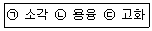
- ㉠-㉡-㉢
- ㉢-㉡-㉠
- ㉠-㉢-㉡
- ㉡-㉠-㉢
(정답률: 72%)
26. 분뇨를 혐기성 소화법으로 처리하고 있다. 정상적인 작동 여부를 확인하려고 할 때 조사 항목으로 가장 거리가 먼 것은?
- 소화 가스량
- 소화가스 중 메탄과 이산화탄소 함량
- 유기산 농도
- 투입 분뇨의 비중
(정답률: 65%)
27. 매립가스의 이동현상에 대한 설명으로 옳지 않은 것은?
- 토양 내에 발생된 가스는 분자확산에 의해 대기로 방출된다.
- 대류에 의한 이동은 가스 발생량이 많은 경우에 주로 나타난다.
- 매립가스는 수평보다 수직 방향으로의 이동 속도가 높다.
- 미량가스는 확산보다 대류에 의한 이동 속도가 높다.
(정답률: 66%)
28. 8 kL/day 용량의 분뇨처리장에서 발생하는 메탄의 양(m3/day)은? (단, 가스 생산량 = 8m3/kL, 가스 중 CH4 함량 = 75%)
- 22
- 32
- 48
- 56
(정답률: 57%)
29. 다음의 특징을 가진 소각로의 형식은?
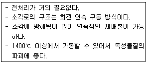
- 다단 소각로
- 유동층 소각로
- 로타리킬른 소각로
- 건식 소각로
(정답률: 72%)
30. PCB와 같은 난연성의 유해폐기물의 소각에 가장 적합한 소각로 방식은?
- 스토커 소각로
- 유동층 소각로
- 회전식 소각로
- 다단 소각로
(정답률: 72%)
31. 생물학적 복원기술의 특징으로 옳지 않은 것은?
- 상온, 상압 상태의 조건에서 이용하기 때문에 많은 에너지가 필요하지 않다.
- 2차 오염 발생률이 높다.
- 원위치에서도 오염정화가 가능하다.
- 유해한 중간물질을 만드는 경우가 있어 분해생성물의 유무를 미리 조사하여야 한다.
(정답률: 62%)
32. 오염된 지하수의 Darcy 속도(유출속도)가 0.15m/day이고, 유효 공극률이 0.4일 때 오염원으로부터 1000m 떨어진 지점에 도달하는데 걸리는 기간(년)은? (단, 유출속도 : 단위시간에 흙의 전체 단면적을 통하여 흐르는 물의 속도)
- 약 6.5
- 약 7.3
- 약 7.9
- 약 8.5
(정답률: 58%)
33. 슬러지 100m3의 함수율이 98%이다. 탈수 후 슬러지의 체적을 1/10로 하면 슬러지 함수율(%)은? (단, 모든 슬러지의 비중 = 1)
- 20
- 40
- 60
- 80
(정답률: 51%)
34. 다음 설명에 해당하는 분뇨 처리 방법은?
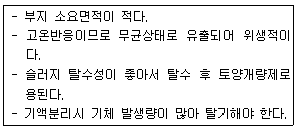
- 혐기성소화법
- 호기성소화법
- 질산화-탈질산화법
- 습식산화법
(정답률: 62%)
35. 유기물의 산화공법으로 적용되는 Fenton 산화반응에 사용되는 것으로 가장 적절한 것은?
- 아연과 자외선
- 마그네슘과 자외선
- 철과 과산화수소
- 아연과 과산화수소
(정답률: 86%)
36. 회전판에 놓인 종이 백(bag)에 폐기물을 충전ㆍ압축하여 포장하는 소형 압축기는?
- 회전식 압축기(Rotary Compactor)
- 소용돌이식 압축기(Console Compactor)
- 백 압축기(Bag Compactor)
- 고정식 압축기(Stationary Compactor)
(정답률: 58%)
37. 1차 반응속도에서 반감기(농도가 50% 줄어드는 시간)가 10분이다. 초기농도의 75%가 줄어드는데 걸리는 시간(분)은?
- 30
- 25
- 20
- 15
(정답률: 57%)
38. 분뇨처리장의 방류수량이 1000m3/day일 때 15분간 염소소독을 할 경우 소독조의 크기(m3)는?
- 약 16.5
- 약 13.5
- 약 10.5
- 약 8.5
(정답률: 59%)
39. 소각로에서 NOx 배출농도가 270ppm, 산소 배출농도가 12%일 때 표준산소(6%)로 환산한 NOx 농도(ppm)는?
- 120
- 135
- 162
- 450
(정답률: 57%)
40. 매립지 설계 시 침출수 집배수층의 조건으로 옳은 것은?
- 투수계수 : 최대 1cm/sec
- 두께 : 최대 30cm
- 집배수층 재료 입경 : 10~13cm 또는 16~32cm
- 바닥경사 : 2~4%
(정답률: 59%)
3과목: 폐기물 공정시험 기준(방법)
41. pH가 2인 용액 2L와 pH가 1인 용액 2L를 혼합하였을 때 혼합용액의 pH는?
- 1.0
- 1.3
- 1.5
- 2.0
(정답률: 64%)
42. 시험분석 대상물질을 기기가 검출할 수 있는 최소한의 농도 또는 양을 나타내는 기기 검출한계에 관한 내용으로 ( )에 옳은 것은?
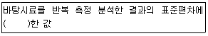
- 2배
- 3배
- 5배
- 10배
(정답률: 59%)
43. 폐기물의 노말헥산 추출물질의 양을 측정하기 위해 다음과 같은 결과를 얻었을 때 노말헥산 추출물질의 농도(mg/L)는?
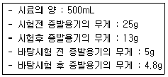
- 11800
- 23600
- 32400
- 53800
(정답률: 51%)
44. 유기물 등을 많이 함유하고 있는 대부분 시료의 전처리에 적용되는 분해방법으로 가장 적절한 것은?
- 질산 분해법
- 질산-염산 분해법
- 질산-불화수소산 분해법
- 질산-황산 분해법
(정답률: 55%)
45. 1ppm이란 몇 ppb를 말하는가?
- 10ppb
- 100ppb
- 1000ppb
- 10000ppb
(정답률: 69%)
46. 할로겐화 유기물질(기체크로마토그래피-질량분석법)의 정량한계는?
- 0.1mg/kg
- 1.0mg/kg
- 10mg/kg
- 100mg/kg
(정답률: 43%)
47. 폐기물 시료 채취에 관한 설명으로 틀린 것은?
- 대상폐기물의 양이 500톤 이상 ~ 1000톤 미만인 경우 시료의 최소 수는 30이다.
- 5톤 미만의 차량에 적재되어 있을 경우에는 적재 폐기물을 평면상에서 6등분한 후 각 등분마다 시료를 채취한다.
- 5톤 이상의 차량에 적재되어 있을 경우에는 적재 폐기물을 평면상에서 9등분한 후 각 등분마다 시료를 채취한다.
- 채취 시료는 수분, 유기물 등 함유성분의 변화가 일어나지 않도록 0~4℃ 이하의 냉암소에 보관하여야 한다.
(정답률: 74%)
48. 함수율 83%인 폐기물이 해당되는 것은?
- 유기성폐기물
- 액상폐기물
- 반고상폐기물
- 고상폐기물
(정답률: 67%)
49. 자외선/가시선 분광법으로 크롬을 정량하기 위해 크롬이온 전체를 6가크롬으로 변화시킬 때 사용하는 시약은?
- 디페닐카르바지도
- 질산암모늄
- 과망간산칼륨
- 염화제일주석
(정답률: 77%)
50. 기체크로마토그래피에서 운반가스로 사용할 수 있는 기체와 가장 거리가 먼 것은?
- 수소
- 질소
- 산소
- 헬륨
(정답률: 62%)
51. 시료채취 방법으로 옳은 것은?
- 시료는 일반적으로 폐기물이 생성되는 단위 공정별로 구분하여 채취하여야 한다.
- 시료 채취도구는 녹이 생기는 재질의 것을 사용해도 된다.
- PCB 시료는 반드시 폴리에틸렌 백을 사용하여 시료를 채취한다.
- 시료가 채취된 병은 코르크 마개를 사용하여 밀봉한다.
(정답률: 58%)
52. 천분율 농도를 표시할 때 그 기호로 알맞은 것은?
- mg/L
- mg/kg
- ㎍/kg
- ‰
(정답률: 72%)
53. 자외선/가시선 분광광도계의 구성으로 옳은 것은?
- 광원부 - 파장선택부 - 측광부 - 시료부
- 광원부 - 가시부 - 측광부 - 시료부
- 광원부 - 가시부 - 시료부 - 측광부
- 광원부 - 파장선택부 - 시료부 - 측광부
(정답률: 69%)
54. 기체크로마토그래피로 측정할 수 없는 항목은?
- 유기인
- PCBs
- 휘발성저급염소화탄화수소류
- 시안
(정답률: 74%)
55. 폐기물공정시험기준의 총칙에 관한 설명으로 틀린 것은?
- “여과한다”란 거름종이 5종 A 또는 이와 동등한 여지를 사용하여 여과하는 것을 말한다.
- 온도의 영향을 있는 것의 판정은 표준온도를 기준으로 한다.
- 염산(1+2)이라고 하는 것은 염산 1mL에 물 1mL을 배합 조제하여 전체 2mL가 되는 것을 말한다.
- 시험에 쓰는 물은 따로 규정이 없는 한 정제수를 말한다.
(정답률: 82%)
56. 폐기물공정시험기준의 적용범위에 관한 내용으로 틀린 것은?
- 폐기물관리법에 의한 오염실태 조사 중 폐기물에 대한 것은 따로 규정이 없는 한 공정시험기준의 규정에 의하여 시험한다.
- 공정시험기준에서 규정하지 않은 사항에 대해서는 일반적인 화학적 상식에 따르도록 한다.
- 공정시험기준에 기재한 방법 중 세부조작은 시험의 본질에 영향을 주지 않는다면 실험자가 일부를 변경할 수 있다.
- 하나 이상의 공정시험기준으로 시험한 결과가 서로 달라 제반 기준의 적부 판정에 영향을 줄 경우에는 판정을 유보하고 재실험하여야 한다.
(정답률: 65%)
57. 원자흡수분광광도법에 의한 비소 정량에 관한설명으로 틀린 것은?
- 과망간산칼륨으로 6가 비소로 산화시킨다.
- 아연을 넣으면 수소화 비소가 발생한다.
- 아르곤-수소 불꽃에 주입하여 분석한다.
- 정량한계는 0.0⑤mg/L이다.
(정답률: 54%)
58. PCB 분석 시 기체크로마토그래피법의 다음 항목이 틀리게 연결된 것은?
- 검출기 : 전자포획 검출기(ECD)
- 운반기체 : 부피백분율 99.9999% 이상의 질소
- 컬럼 : 활성탄 컬럼
- 농축장치 : 구데르나다니쉬농축기
(정답률: 55%)
59. K2Cr2O7을 사용하여 크롬 표준원액(100mgCr/L) 100mL를 제조할 때 취해야 하는 K2Cr2O7의 양(mg)은? (단, 원자량 K = 39, Cr = 52, O = 16)
- 14.1
- 28.3
- 35.4
- 56.5
(정답률: 47%)
60. 기름성분을 중량법으로 측정하고자 할 때 시험기준의 정량한계는?
- 1% 이하
- 0.1% 이하
- 0.01% 이하
- 0.001% 이하
(정답률: 68%)
4과목: 폐기물 관계 법규
61. 폐기물처리업종별 영업 내용에 대한 설명 중 틀린 것은?
- 폐기물 중간재활용업 : 중간가공 폐기물을 만드는 영업
- 폐기물 종합재활용업 : 중간재활용업과 최종재활용업을 함께 하는 영업
- 폐기물 최종처분업 : 폐기물 매립(해역 배출도 포함한다.)등의 방법으로 최종처분하는 영업
- 폐기물 수집ㆍ운반업 : 폐기물을 수집하여 재활용 또는 처분장소로 운반하거나 수출하기 위하여 수집ㆍ운반하는 영업
(정답률: 67%)
62. 폐기물 처리시설의 종류 중 재활용시설(기계적 재활용 시설)의 기준으로 틀린 것은?
- 용융시설(동력 7.5kW 이상인 시설로 한정)
- 응집ㆍ침전시설(동력 7.5kW 이상인 시설로 한정)
- 압축시설(동력 7.5kW 이상인 시설로 한정)
- 파쇄ㆍ분쇄시설(동력 15kW 이상인 시설로 한정)
(정답률: 69%)
63. 폐기물매립시설의 사후관리 업무를 대행할 수 있는 자는? (단, 환경부장관이 사후관리를 대행할 능력이 있다고 인정하여 고시하는 자는 고려하지 않음)
- 환경보전협회
- 한국환경공단
- 폐기물처리협회
- 한국환경자원공사
(정답률: 81%)
64. 폐기물 수집ㆍ운반업자가 임시보관장소에 보관할 수 있는 폐기물(의료폐기물 제외)의 허용량 기준은?
- 중량 450톤 이하이고, 용적이 300세제곱미터 이하인 폐기물
- 중량 400톤 이하이고, 용적이 250세제곱미터 이하인 폐기물
- 중량 350톤 이하이고, 용적이 200세제곱미터 이하인 폐기물
- 중량 300톤 이하이고, 용적이 150세제곱미터 이하인 폐기물
(정답률: 61%)
65. 폐기물처리업자(폐기물 재활용업자)의 준수사항에 관한 내용으로 ( )에 알맞은 것은?
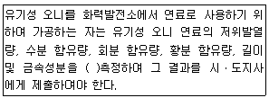
- 매 월 1회 이상
- 매 2월 1회 이상
- 매 분기당 1회 이상
- 매 반기당 1회 이상
(정답률: 72%)
66. 100만원 이하의 과태료가 부과되는 경우에 해당되는 것은?
- 폐기물처리 가격의 최저액보다 낮은 가격으로 폐기물처리를 위탁한 자
- 폐기물운반자가 규정에 의한 서류를 지니지 아니하거나 내보이지 아니한 자
- 장부를 기록 또는 보존하지 아니하거나 거짓으로 기록한 자
- 처리이행보증보험의 계약을 갱신하지 아니하거나 처리이행보증금의 증액 조정을 신청하지 아니한 자
(정답률: 41%)
67. 다음 용어의 정의로 옳지 않은 것은?
- 재활용이란 폐기물을 재사용ㆍ재생이용하거나 재사용ㆍ재생이용할 수 있는 상태로 만드는 활동을 말한다.
- 생활폐기물이란 사업장폐기물 외의 폐기물을 말한다.
- 폐기물감량화시설이란 생산 공정에서 발생하는 폐기물 배출을 최소화(재활용은 제외함)하는 시설로서 환경부령으로 정하는 시설을 말한다.
- 폐기물처리시설이란 폐기물의 중간처분시설, 최종처분시설 및 재활용시설로서 대통령령으로 정하는 시설을 말한다.
(정답률: 67%)
68. 폐기물중간재활용업, 폐기물최종재활용업 및 폐기물 종합재활용업의 변경허가를 받아야 하는 중요사항으로 옳지 않은 것은?
- 운반차량(임시차량 포함)의 감차
- 폐기물 재활용시설의 신설
- 허가 또는 변경허가를 받은 재활용 용량의 100분의 30이상(금속을 회수하는 최종재활용업 또는 종합재활용업의 경우에는 100분의 50이상)의 변경(허가 또는 변경허가를 받은 후 변경되는 누계를 말한다)
- 폐기물 재활용시설 소재지의 변경
(정답률: 74%)
69. 폐기물처분시설 또는 재활용시설 중 음식물류 폐기물을 대상으로 하는 시설의 기술관리인 자격기준으로 틀린 것은?
- 토양환경산업기사
- 수질환경산업기사
- 대기환경산업기사
- 토목산업기사
(정답률: 38%)
70. 과징금의 사용용도로 적정치 않는 것은?
- 광역 폐기물처리시설의 확충
- 폐기물로 인하여 예상되는 환경상 위해를 제거하기 위한 처리
- 폐기물처리시설의 지도ㆍ점검에 필요한 시설ㆍ장비의 구입 및 운영
- 폐기물처리기술의 개발 및 장비개선에 소요되는 비용
(정답률: 61%)
71. 주변지역 영향 조사대상 폐기물 처리시설 기준으로 옳은 것은?
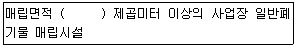
- 1만
- 3만
- 5만
- 15만
(정답률: 70%)
72. 매립시설 및 소각시설의 주변지역 영향조사 횟수 기준에 관한 내용으로 ( )에 옳은 것은?
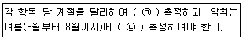
- ㉠ 2회 이상, ㉡ 1회 이상
- ㉠ 3회 이상, ㉡ 2회 이상
- ㉠ 1회 이상, ㉡ 2회 이상
- ㉠ 4회 이상, ㉡ 3회 이상
(정답률: 58%)
73. 폐기물처리시설의 설치, 운영을 위탁받을 수 있는 자의 기준에 관한 내용 중 소각시설의 경우 보유하여야 하는 기술인력 기준으로 옳지 않은 것은?
- 일반기계기사 1급 1명
- 폐기물처리기술사 1명
- 시공분야에서 3년 이상 근무한 자 1명
- 폐기물처리기사 또는 대기환경기사 1명
(정답률: 72%)
74. 폐기물 처리시설 종류의 구분이 틀린 것은?
- 기계적 재활용시설 : 유수 분리 시설
- 화학적 재활용시설 : 연료화 시설
- 생물학적 재활용시설 : 버섯재배시설
- 생물학적 재활용시설 : 호기성ㆍ혐기성 분해시설
(정답률: 50%)
75. 폐기물처리사업 계획의 적합통보를 받은 자 중 소각시설의 설치가 필요한 경우에는 환경부 장관이 요구하는 시설ㆍ장비ㆍ기술능력을 갖추어 허가를 받아야 한다. 허가신청서에 추가서류를 첨부하여 적합통보를 받은 날부터 언제까지 시ㆍ도지사에게 제출하여야 하는가?
- 6개월 이내
- 1년 이내
- 2년 이내
- 3년 이내
(정답률: 39%)
76. 폐기물 관리의 기본원칙으로 틀린 것은?
- 누구든지 폐기물을 배출하는 경우에는 주변환경이나 주민의 건강에 위해를 끼치지 아니하도록 사전에 적절한 조치를 하여야 한다.
- 환경오염을 일으킨 자는 오염된 환경을 복원하기보다 오염으로 인한 피해의 구제에 드는 비용만 부담하여야 한다.
- 국내에서 발생한 폐기물은 가능하면 국내에서 처리되어야 하고, 폐기물의 수입은 되도록 억제되어야 한다.
- 폐기물은 그 처리과정에서 양과 유해성을 줄이도록 하는 등 환경보전과 국민건강보호에 적합하게 처리되어야 한다.
(정답률: 87%)
77. 휴업ㆍ폐업 등의 신고에 관한 설명으로 ( )에 알맞은 것은?
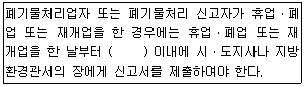
- 5일
- 10일
- 20일
- 30일
(정답률: 74%)
78. 매립시설 검사기관으로 틀린 것은?
- 한국매립지관리공단
- 한국환경공단
- 한국건설기술연구원
- 한국농어촌공사
(정답률: 62%)
79. 폐기물처리업자가 방치한 폐기물의 경우, 폐기물처리 공제조합에 처리를 명할 수 있는 방치폐기물의 처리량은 그 폐기물처리업자의 폐기물 허용보관량의 몇 배 이내인가?
- 1.5배 이내
- 2.0배 이내
- 2.5배 이내
- 3.0배 이내
(정답률: 73%)
80. 에너지 회수기준으로 알맞지 않는 것은?
- 다른 물질과 혼합하지 아니하고 해당 폐기물의 저위발열량이 킬로그램당 3천킬로칼로리 이상일 것
- 환경부장관이 정하여 고시하는 경우에는 폐기물의 30퍼센트 이상을 원료나 재료로 재활용하고 그 나머지 중에서 에너지의 회수에 이용할 것
- 회수열을 50퍼센트 이상 열원으로 스스로 이용하거나 다른 사람에게 공급할 것
- 에너지의 회수효율(회수에너지 총량을 투입에너지총량으로 나눈 비율을 말한다.)이 75퍼센트 이상일것
(정답률: 79%)